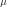
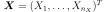
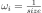
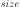
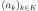
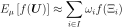

IntegrationStrategy¶
-
class
IntegrationStrategy(*args)¶ Integration strategy for the approximation coefficients.
- Available constructors:
LeastSquaresStrategy(measure)
LeastSquaresStrategy(weightedExp)
LeastSquaresStrategy(measure, weightedExp)
LeastSquaresStrategy(inputSample, outputSample)
LeastSquaresStrategy(inputSample, weights, outputSample)
- Parameters
- weightedExp
WeightedExperiment Experimental design used for the transformed input data. When not precised, OpenTURNS uses a
MonteCarloExperiment.- measure
Distribution Distribution  with respect to which the basis is orthonormal. When not precised, OpenTURNS uses the limit measure defined within the
WeightedExperiment.- inputSample, outputSample2-d sequence of float
The input random variables  and the output samples
 that describe the model.
that describe the model.- weightssequence of float
Numerical point that are the weights associated to the input sample points such that the corresponding weighted experiment is a good approximation of . If not precised, all weights are equals to , where  is the size of the sample.
- weightedExp
Notes
This class is not usable because it has sense only within the
FunctionalChaosAlgorithm: the integration strategy evaluates the coefficients  of the polynomials decomposition as follows:where
 .
.The mean expectation
 is approximated by a relation of type:
is approximated by a relation of type:
where is a function
 defined as:
defined as:In the approximation of the mean expectation, the set I, the points
 and the weights
and the weights  are
evaluated from methods implemented in the
are
evaluated from methods implemented in the WeightedExperiment.- Attributes
thisownThe membership flag
Methods
Accessor to the object’s name.
Accessor to the coefficients.
Accessor to the experiments.
getId()Accessor to the object’s id.
Accessor to the input sample.
Accessor to the measure.
getName()Accessor to the object’s name.
Accessor to the output sample.
Accessor to the relative error.
Accessor to the residual.
Accessor to the object’s shadowed id.
Accessor to the object’s visibility state.
Accessor to the weights.
hasName()Test if the object is named.
Test if the object has a distinguishable name.
setExperiment(weightedExperiment)Accessor to the design of experiment.
setInputSample(inputSample)Accessor to the input sample.
setMeasure(measure)Accessor to the measure.
setName(name)Accessor to the object’s name.
setOutputSample(outputSample)Accessor to the output sample.
setShadowedId(id)Accessor to the object’s shadowed id.
setVisibility(visible)Accessor to the object’s visibility state.
setWeights(weights)Accessor to the weights.
computeCoefficients
-
getClassName()¶ Accessor to the object’s name.
- Returns
- class_namestr
The object class name (object.__class__.__name__).
-
getExperiment()¶ Accessor to the experiments.
- Returns
- exp
WeightedExperiment Weighted experiment used to evaluate the coefficients.
- exp
-
getId()¶ Accessor to the object’s id.
- Returns
- idint
Internal unique identifier.
-
getMeasure()¶ Accessor to the measure.
- Returns
- muDistribution
Measure defining the scalar product.
-
getName()¶ Accessor to the object’s name.
- Returns
- namestr
The name of the object.
-
getRelativeError()¶ Accessor to the relative error.
- Returns
- efloat
Relative error.
-
getResidual()¶ Accessor to the residual.
- Returns
- erfloat
Residual error.
-
getShadowedId()¶ Accessor to the object’s shadowed id.
- Returns
- idint
Internal unique identifier.
-
getVisibility()¶ Accessor to the object’s visibility state.
- Returns
- visiblebool
Visibility flag.
-
hasName()¶ Test if the object is named.
- Returns
- hasNamebool
True if the name is not empty.
-
hasVisibleName()¶ Test if the object has a distinguishable name.
- Returns
- hasVisibleNamebool
True if the name is not empty and not the default one.
-
setExperiment(weightedExperiment)¶ Accessor to the design of experiment.
- Parameters
- exp
WeightedExperiment Weighted design of experiment.
- exp
-
setMeasure(measure)¶ Accessor to the measure.
- Parameters
- mDistribution
Measure defining the scalar product.
-
setName(name)¶ Accessor to the object’s name.
- Parameters
- namestr
The name of the object.
-
setShadowedId(id)¶ Accessor to the object’s shadowed id.
- Parameters
- idint
Internal unique identifier.
-
setVisibility(visible)¶ Accessor to the object’s visibility state.
- Parameters
- visiblebool
Visibility flag.
 .
.